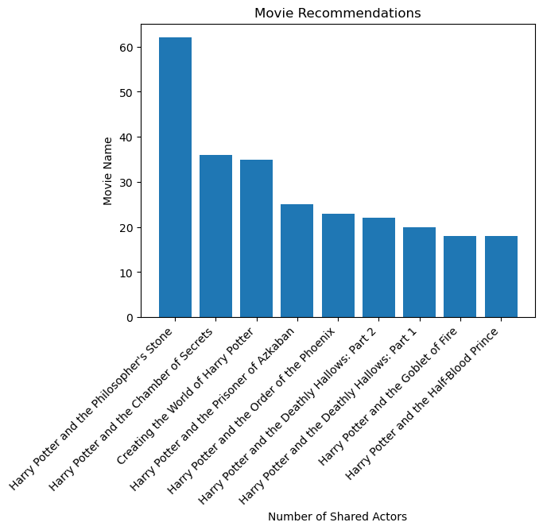

class TmdbSpider(scrapy.Spider):
"""
Setting up a class for our scrapy spider
"""
name = 'tmdb_spider'
def __init__(self, subdir=None, *args, **kwargs):
"""
Initializing the starting point (initial website) to begin the parsing
"""
self.start_urls = [f"https://www.themoviedb.org/movie/{subdir}/"]In the blog, we will be learning how to web scrape through TMDB and create a csv file using the library scrapy.
Getting Setup
Here is how we set up our webscrapper.
We want to create a folder, with all of the files needed to scrape through TMDB. We will run the following command into your terminal.
scrapy startproject TMDB_scraper
cd TMDB_scraper
Next, we want to create a py file inside spider called tmdb_spider.py.
Setting Up the TmdbSpider class
In tmdb_spider.py, we have to set up a class.
In the class above, we first name our scrapper, tmdb_spider. You are allowed to name it to whatever you would like. Next we will define an function called init.
This is where you set up the base url that you will be scrapping through. For this demo, we will be scrapping through, https://www.themoviedb.org/movie/.
The subdir allows the user to scrape through which ever movie they like. In this example, our subdir will be replaced with “671-harry-potter-and-the-philosopher-s-stone”, which can be modified based on the user’s input.
parse Function
Inside our class, we will define another function called parse. This will bring us to the next page that contains the information on the Full Cast and Members.
def parse(self, response):
"""
Parsing through the initial website to get to the cast webpage
"""
# getting to the cast page
yield scrapy.Request(f"{response.url}/cast",
callback = self.parse_full_credits)In parse, you can see that we set the first parameter of scrapy.Request to f”{response.url}/cast”. This will take the url that we have selected in the init function, and add on /cast to get to the page with all the cast information.
parse_full_credits Function
From the cast information webpage, we will like to go to each individual actor’s webpage. To do so, we will define another function inside the class called parse_full_credits. What this function will do is go through each actor on the website and call the function parse_actor_page.
def parse_full_credits(self, response):
"""
At the cast webpage, this function will look through all the crew members and
get link to their own personal webpage
"""
# getting the information from the full cast and members
for info in response.css("ol.people.credits")[0].css("li") :
# getting the links to the individual actors
actor = info.css('a::attr(href)').get()
yield scrapy.Request(f"https://www.themoviedb.org{actor}",
callback = self.parse_actor_page)In parse_full_credits, to get to each individual actor’s page, we will use the following command: response.css(“ol.people.credits”)[0].css(“li”).
How do we know we will need to use this command? We will inspect the webpage.
In the webpage, when we hover over a line, we can see the corresponding section highlighted on the website. We will follow all the subcategories until we find the link to an cast member’s webpage.
To get to that section, we will use response.css(“ol.people.credits”)[0].css(“li”). We will put this under a for loop, which will allow us to parse through each individual actor under Cast.
After getting to a single actor, we will use ‘a::attr(href)’ to get the link to the actor’s page. We will then add on the link to https://www.themoviedb.org, by using the following code: f”https://www.themoviedb.org{actor}“. This will send the link to the next function to be parsed.
parse_actor_page Function
We will now define another function inside the class called parse_actor_page. This will scrape through a specific actor’s page and find all the movies and tv shows the actor had an Acting role in.
def parse_actor_page(self, response):
"""
This function will start at the actor's webpage.
It will then take all the movies and TV shows this actor had an Acting role in
and insert it into a dictionary.
"""
# some actor acting informations are not aligned, therefore we will need
# to take that into account and use an if statement to find the correct header
header_pos = 0
if response.css('h3.zero:contains("Acting")') :
header_pos = 0
elif response.css('h3.one:contains("Acting")') :
header_pos = 1
elif response.css('h3.two:contains("Acting")'):
header_pos = 2
actor_acting = response.css("table.card.credits")[header_pos]
for work in actor_acting.css("a.tooltip bdi::text").getall():
yield {"actor" : response.css("h2.title a::text").get(),
"movie_or_TV_name" : work}Again, we will look through inspect to see exactly where the information we need is located. We need to be very careful in this section, as some cast webpages are out of order.
Specifically, when we look at David Holmes webpage, we see that Acting is not displayed first. Instead, Crew is displayed first on his page. Therefore, to figure out where the Acting section is for each actor, we will use an if statement.
Under inspect, we see that h3 contains all the information on the movies and tv shows that actors has been in and whether they were in Acting, Crew, or Production. Therefore, to find the specific h3 that has the information on the movies and tv shows an actor had an Acting role in, we will use the following command: ‘h3.zero:contains(“Acting”)’, ‘h3.one:contains(“Acting”)’ or ‘h3.two:contains(“Acting”)’. This will look through the text in h3 and see if Acting is in the line. If it is, we will then set header_pos.
Next, we will use the command response.css(“table.card.credits”)[header_pos] which will use the position of the header to get to the information on the movies and tv shows the actor has been in.
To get the movie and tv show name, we will use actor_acting.css(“a.tooltip bdi::text”).getall(). This will get the names of all the movies and tv show’s the actor has been in.
Now, we want to add the information into a dictionary. We will for loop through the result and add the titles to the corresponding actor.
Now that we have completed our code, we can run our code by using the following terminal command:
scrapy crawl tmdb_spider -o movies.csv -a subdir=671-harry-potter-and-the-philosopher-s-stone
If you would like to parse through another movie, simply replace the subdir to another movie’s link.
If you run into any issues, you will have to use an USER_AGENT to make the website not think you are a bot. You can add this command to the terminal command: -s USER_AGENT=’Mozilla/5.0 (Macintosh; Intel Mac OS X 11_5_2) AppleWebKit/605.1.15 (KHTML, like Gecko) Version/15.2 Safari/605.1.15
Afterwards, you should have a file generated that has all of the information you need.
Creating a Table with the CSV File
We will now use the csv file we have created to find out the amount of actors that have been in the same movie. To do so, we will need to perform some data cleaning. We will import pandas and our csv file that we have generated in the previous section.
import pandas as pd
movies = pd.read_csv('movies.csv')We can get a quick overview of our csv file by using the command movies.head()
movies.head()| actor | movie_or_TV_name | |
|---|---|---|
| 0 | Daniel Radcliffe | Have I Got a Bit More News for You |
| 1 | Daniel Radcliffe | David Holmes: The Boy Who Lived |
| 2 | Daniel Radcliffe | 100 Years of Warner Bros. |
| 3 | Daniel Radcliffe | Mulligan |
| 4 | Daniel Radcliffe | Digman! |
To get figure out how many actors are in the same movie. One way to approach this problem is suming the number of times the Movie Name appears.
We will first create an empty pandas dataframe with the columns Movie Name and Number of Shared Actors.
Next, we will create a for loop to loop through all of the unique Movie Names in our csv file. Then, we will loop through all the names of the movies in the movie_or_TV_name column and increment num by 1 to keep track of the number of times the specific movie name appears. We will then add the final num into our dataframe using the command: df.loc[len(df.index)]. We want to make sure to set num back to 0, so we can start counting from the start again.
We also should sort it by the the movie’s with the highest number of shared actors. We will do that by using sort_values and setting the ascending parameter to false. This will sort the Number of Shared Actors by descending order. We can now recommend movies based on the number of shared actors. If the user’s favorite movie is Harry Potter and the Philosopher’s Stone, the next movie we can recommend is Harry Potter and the Chamber of Secrets.
# All the unique movies titles in the movie_or_TV_name column
unique_titles = movies['movie_or_TV_name'].unique()
# Creating an empty dataframe to put all the information inside
df = pd.DataFrame(columns=['Movie Name', 'Number of Shared Actors'])
# Initialize num for the for loop
num = 0
# Looking at a unique title at a time
for j in unique_titles :
# comparing it to all the names in the movie_or_TV_name column
for i in movies['movie_or_TV_name'] :
# if there is a match
if (j == i) :
# will increment num by 1
num += 1
# adding the num and the movie name to our dataframe
df.loc[len(df.index)] = [j, num]
# reset num to 0 for the next movie
num = 0
# sort the number of shared actors by descending order
df = df.sort_values(['Number of Shared Actors'], ascending=[False])
df['Number of Shared Actors'] = pd.to_numeric(df['Number of Shared Actors'])
df| Movie Name | Number of Shared Actors | |
|---|---|---|
| 77 | Harry Potter and the Philosopher's Stone | 62 |
| 75 | Harry Potter and the Chamber of Secrets | 36 |
| 57 | Creating the World of Harry Potter | 35 |
| 72 | Harry Potter and the Prisoner of Azkaban | 25 |
| 64 | Harry Potter and the Order of the Phoenix | 23 |
| ... | ... | ... |
| 863 | Girls' Night | 1 |
| 861 | Talking Heads 2 | 1 |
| 860 | Dinnerladies | 1 |
| 859 | Jack and the Beanstalk: The ITV Pantomime | 1 |
| 2256 | Today | 1 |
2257 rows × 2 columns
Now let’s make an interesting visualization from our new dataset!
Our goal is to create a barplot that shows all the movies with at least 15 shared actors in the movie.
import matplotlib.pyplot as plt
# create a sub dataset that has at least 15 shared actors
visualization = df[df['Number of Shared Actors'] >= 15]
# creating the barplot using matplotlib
plt.bar(x = visualization['Movie Name'],
height = visualization['Number of Shared Actors'])
# setting the title
plt.title("Movie Recommendations")
# rotate the names on the x-axis so it is legible
plt.xticks(rotation = 45, ha='right')
# labeling the x-axis
plt.xlabel("Number of Shared Actors")
# labeling the y-axis
plt.ylabel("Movie Name")Text(0, 0.5, 'Movie Name')
We have now created a barplot that shows the recommended movies based on the number of shared actors!
Final Takeaway:
That is how we use scrapy to webscrape TMDB! We can use a similar method to parse through other websites as well!